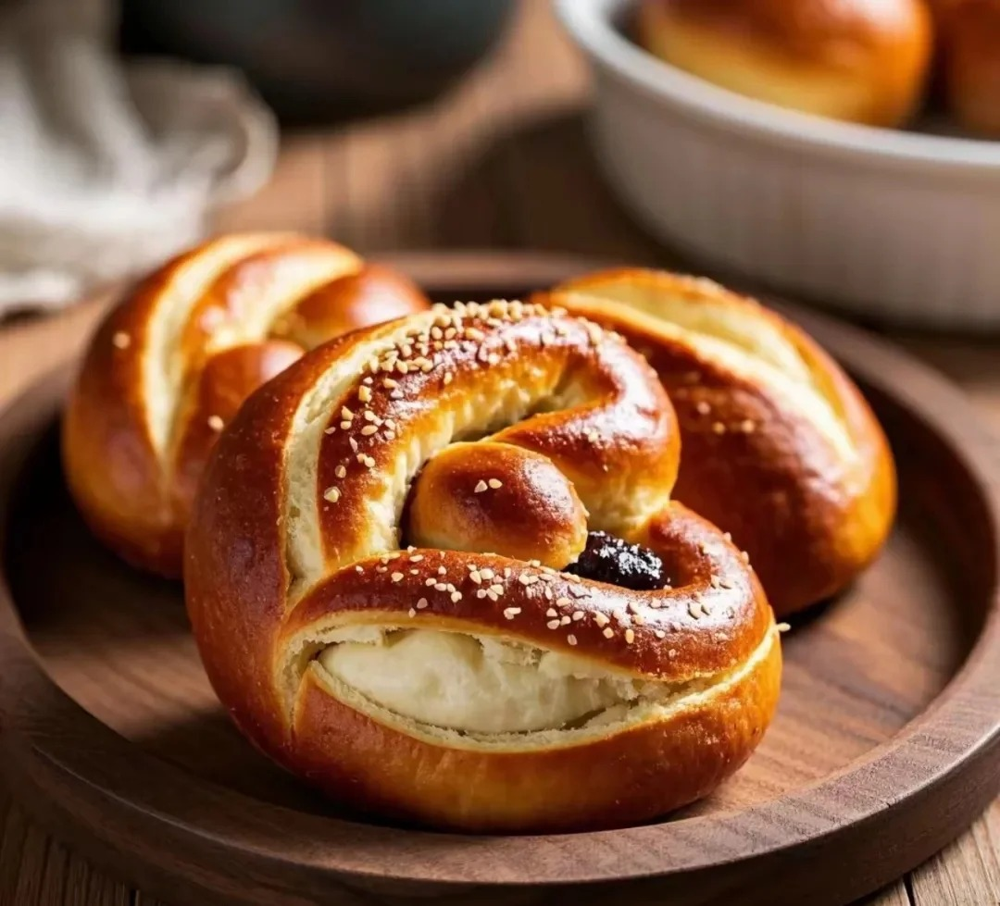

碱水结



公元610年，一位意大利僧侣为了激励分心的学生，创造了双臂交叉在胸前祈祷样的面包，即最初的德国结(bracellae)。后来，这种面包在德国被赋予了宗教象征意义，如忏悔和虔诚。另一种说法是，它源自拉丁语中的“Pretiloe",意为“小礼物”，或古罗马时期意大利语中的"Bracciatelli”,意为“小胳膊”。碱水结的形状与基督教的祈祷手势相似，双手交叉放在胸前，象征着虔诚和祈祷。在中世纪，它被视为一种宗教食品，用于忏悔和表达虔诚。 碱水结的历史可以追溯到公元610年，当时一位意大利僧侣为了激励学生而创造了这种双臂交叉的面包形状。 在德国，碱水结被视为好运、繁荣和精神满足的象征，并经常分发给穷人。这种传统形状逐渐成为了碱水面包的标志性特征。
制作方法：